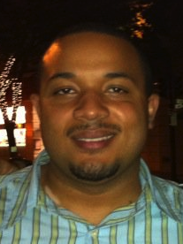

Ellery Temple Jr.
My Profile
Talented professional with nine years experience in customer service, training, and technical support. Strong problem solving and communication skills. Excels in a fast paced environment, learning new systems quickly with changing corporate environments. Knowledgeable and dependable, providing information on new products and company processes.
Experience
Avid Home Theater
SALES ENGINEER Control4 programmer and perform network configuration/IT services with specialty in wireless solutions. Provide in-home service and remote support. Work with marketing team proofing the company website and write content for our blog page and social media sites. Manage eBay ecommerce site and handle all client trade-ins. Home automation system design including lighting and shade control, controlled thermostats, security and surveillance, and distributed audio.
Magnolia Audio/Video
SYSTEM DESIGNER Knowledge of residential construction, structured wiring, cable/satellite services, and home networking. Provided on-site and phone support of convergence products and home networks. Project management experience including working with general contractors, cabinet makers, electricians, and interior designers. Responsible for all store merchandising and created business plans to expand product assortment. Facilitated product and sales training for Best Buy/Magnolia Home Theater management teams across the Bay Area including published articles in company magazine. Increased company visibility in the community through managing store Yelp page, vendor trainings, and PR events (Best of the Bay – San Francisco Magazine, San Jose Jazz Festival).
Visioneer
QA ENGINEER Black box testing of preliminary builds including firmware, performance testing, and compatibility with popular 3rd party software. Responsible for building test procedures for UI, reliability, and performance; identified bugs logged into tracker database and regressed across multiple platforms. Proof support documentation for installation and device usage. Promoted from Technical Support Level II to QA Engineer within one year of joining the company.
Education
Online Training - Web Development
Santa Clara University
B.S. Computer Science
1998-2003